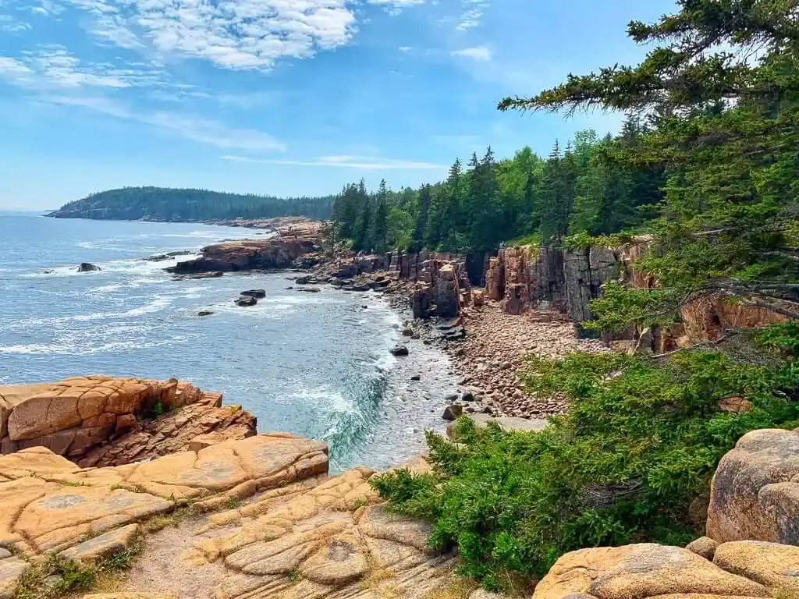
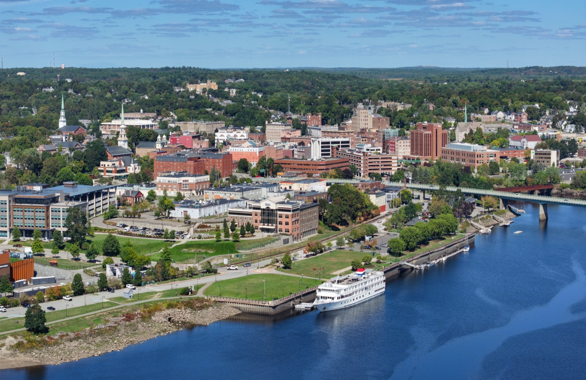
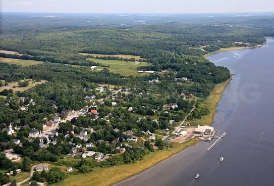

Around Town
THINGS TO DO
If you're making a trip of it, there's plenty to see along the Penobscot and down the Maine coast. A few of our favorites are below — we'll keep adding to this list.
ACADIA NATIONAL PARK
1 hour from Bangor

Acadia National Park is home to some of the absolute best hiking in Maine. It is also located in one of the best travel locations in the state, Bar Harbor. For any guests who are looking to explore Maine, we recommend tacking on a visit to Bar Harbor/Acadia National Park either before or after our wedding weekend.
Fort Knox State Park
More than 150 years old and Maine's largest historic fort — one of the best-preserved military fortifications in New England, and fun for all ages.
Penobscot Narrows Observatory
One of only four bridge observatories in the world and, at 42 stories, the tallest. It stands right beside Fort Knox, so the two make an easy pair to visit together.
BANGOR

Microbreweries & Restaurants
Bangor is home to great microbreweries like Orono Brewing Company, Bangor Beer Co., Mason's Brewing Company, and Blaze, plus phenomenal restaurants like Timber and 11 Central.
Stephen King's House
The Victorian home of author Stephen King on West Broadway. STK Tours runs a guided trip past the house and other Bangor spots featured in his books.
Waterfront Concerts
An open-air venue on the Bangor waterfront that hosts A-list bands and artists all summer long.
Bangor Municipal Golf Course
A scenic 27-hole public course just outside downtown Bangor, open to visitors.
Penobscot Theater Company
A professional theater company staging plays and musicals year-round at the historic Bangor Opera House downtown.
Penobscot River Walkway
A paved path tracing the Penobscot along the downtown Bangor waterfront, with open views across to Brewer.
WINTERPORT

Penobscot Bay Brewery & Winterport Winery
A combined brewery and winery in the village, pouring small-batch microbrews alongside Maine fruit wines.
Sonny's Driving Range
A golf driving range and practice area on the edge of town, good for working in a few swings.
Winterport Marketplace
A rambling shop of local artisans, antiques, and treasure-trove finds in the heart of the village.
Selah
A new art gallery in town showing work by local and regional artists.
Skyline Adventures
Kayak rentals and guided river tours based in neighboring Hampden.
Penobscot Narrows Bridge
A dramatic cable-stayed span crossing the Penobscot Narrows, and one of the most photographed spots on the river.